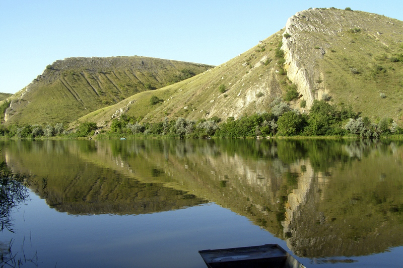
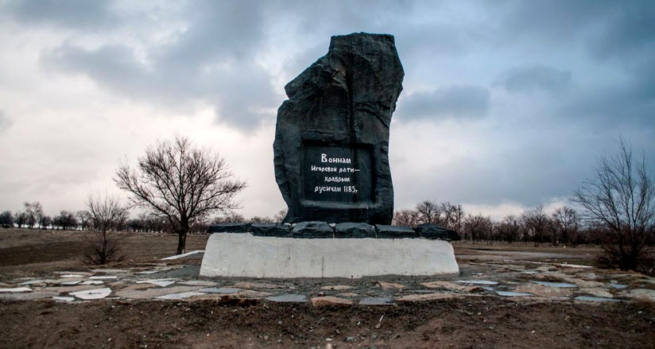
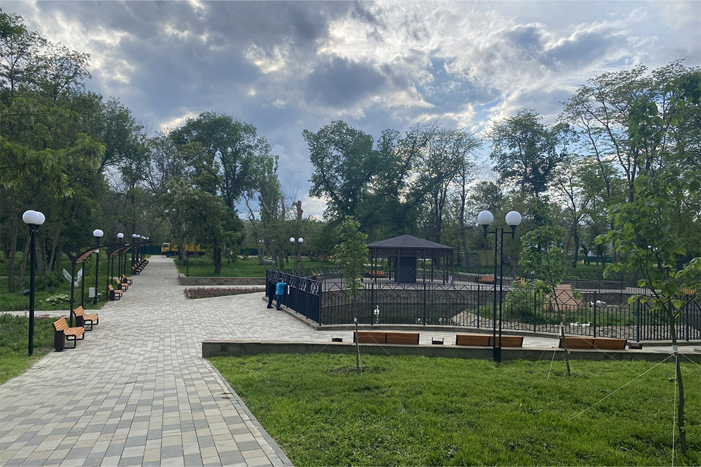
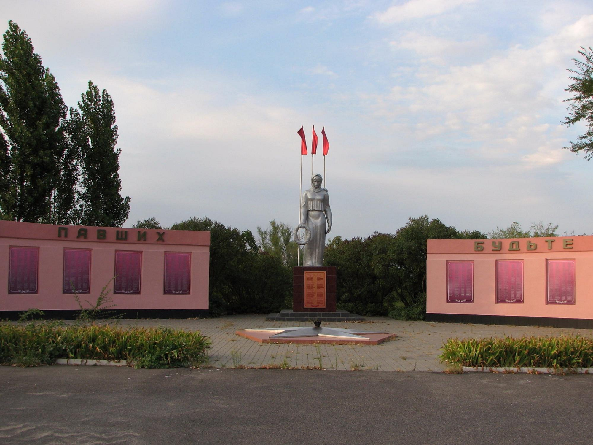

Что посмотреть?
Белая Калитва удивляет разнообразием: здесь есть как уникальные природные объекты, так и важные исторические монументы.
Скалы «Две Сестры»
Уникальный памятник природы. Две абсолютно одинаковые скалы-близнецы гребневидной формы, круто обрывающиеся к реке Северский Донец. С ними связана красивая и печальная местная легенда о двух сестрах-казачках.

Гора Караул и Памятник Игоревой рати
Единственный в мире памятник, посвященный героям «Слова о полку Игореве». На вершине горы Караул установлен огромный каменный монумент в память о храбрых воинах князя Игоря.

Парк им. Маяковского
Прекрасная зеленая зона на берегу реки, излюбленное место отдыха горожан. Здесь расположены аттракционы, тенистые аллеи и смотровые площадки с видом на водную гладь. Сейчас он отреставрирован, и выглядит просто потрясающее.

Мемориальный комплекс Высота Бессмертия
Величественный военно-исторический памятник в городе Белая Калитва, воздвигнутый в память о подвиге 30 советских воинов Башкирской кавалерийской дивизии под командованием лейтенанта Аннакулы Атаева.
